La aplicación está en línea
Westvane corre en una máquina virtual propia (servidor VPS en Contabo, Linux) con todo el sistema desplegado: la web (Next.js) y la API (FastAPI) en contenedores Docker, la base de datos y sus respaldos. No hace falta instalar nada para revisarla: basta abrir el enlace y entrar con «Entrar a la app».
profesor{{CLAVE}}Entra en https://westvane.duckdns.org/ingresar, escribe el usuario y la contraseña (respeta mayúsculas y guiones) y pulsa «Ingresar». La cuenta es de administrador: puede ver y probar todo, y sus cambios sí se guardan.
invitado12345678O el botón «Entrar como invitado» en la pantalla de ingreso: recorre y prueba todo (simular rutas, comparar, cotizar, descargar PDF y Excel), pero ningún cambio se guarda. Ideal para compartir sin riesgo.
deploy/verificar.sh, más de 30 comprobaciones).Tutorial, ejecución local y pruebas de Westvane TMS: gestión de transporte multimodal (carretera, río, mar, aire y tren) sobre la red real de Colombia, para operadores logísticos.
La portada muestra la red real de Colombia que se enciende modo por modo, el mapa con las vías cerradas y los kilómetros por modo. Desde aquí se puede calcular una ruta en vivo o «Entrar a la app».
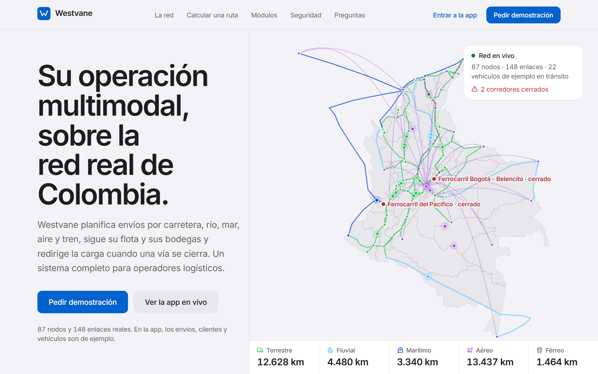
Usuario o correo y contraseña (o un código al correo para las cuentas que solo tienen correo). La app pide sesión; la presentación, el seguimiento para clientes y lo legal son públicos.
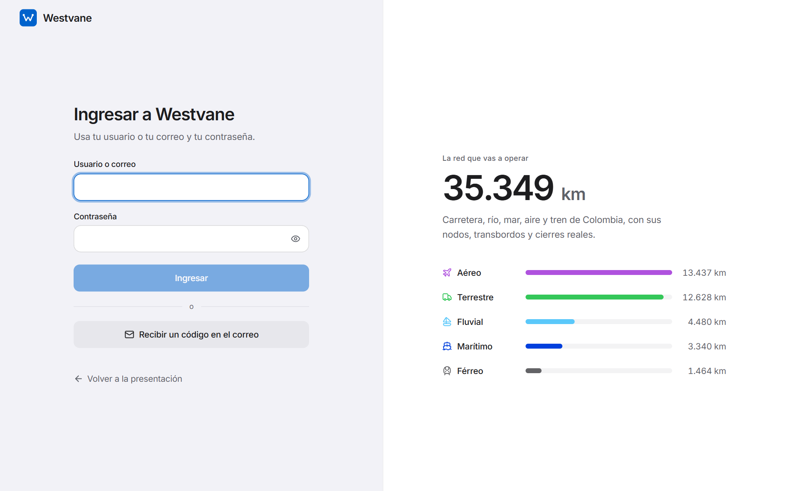
Las tres cifras que importan (envíos en ruta, con retraso y costo comprometido) con su tendencia de 14 días; debajo, «Requiere atención»: vehículos fuera de servicio, vías cerradas, documentos por vencer, mantenimientos vencidos, inventario bajo el mínimo y envíos retrasados. Cada fila lleva a la vista filtrada.
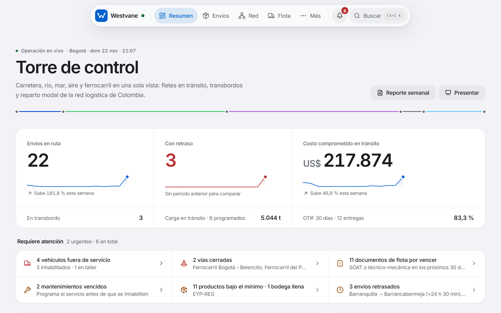
Mapa 3D recortado a Colombia con carretera, río, mar, aire y tren. A la izquierda, «Ahora en la red»: vehículos en tránsito por modo, vías cerradas y los envíos más cerca de llegar. La barra de abajo enciende o apaga cada modo, los departamentos y la flota. «Datos» muestra lo mismo en tablas.
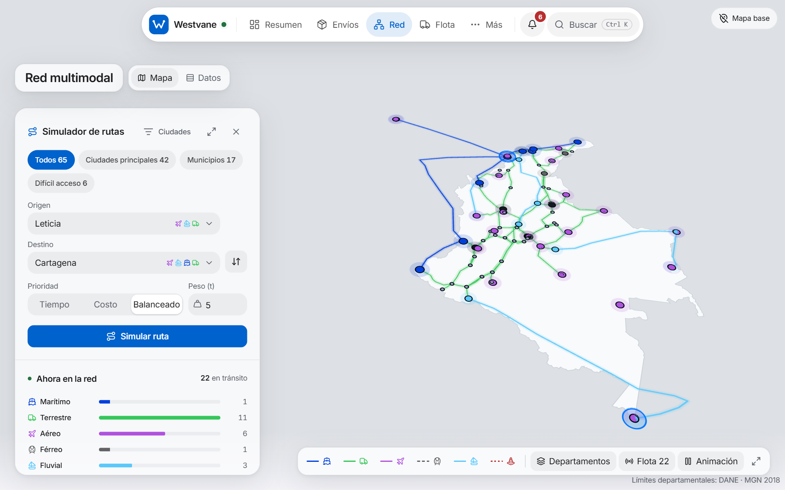
Elige origen, destino, prioridad (tiempo, costo o equilibrio) y peso, y pulsa «Simular ruta». El motor encuentra la combinación óptima de modos con sus transbordos, costo, combustible y CO₂e, la dibuja en el mapa y permite crear el envío, cotizarlo o comparar escenarios.
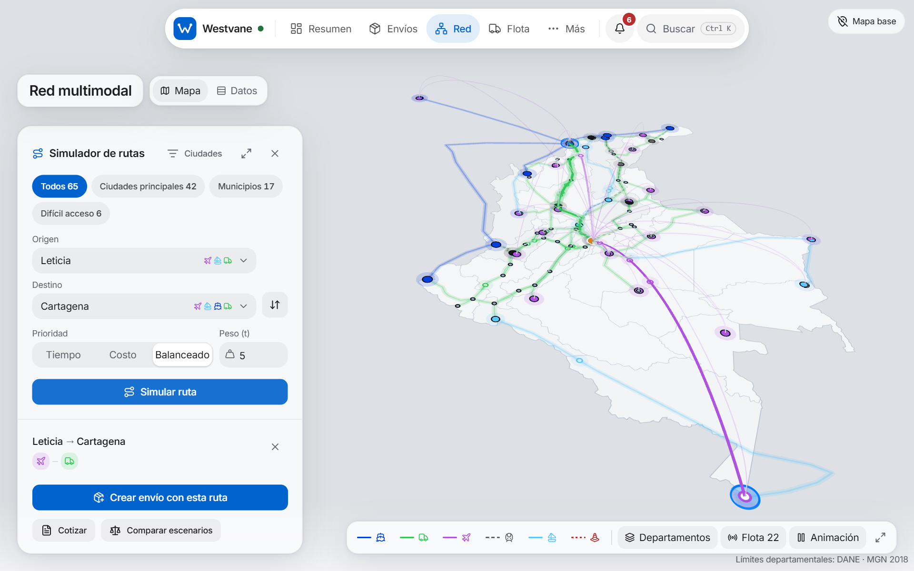
La lista con filtros por estado y modo, búsqueda, orden y avance dibujado como la ruta (un segmento por tramo, del color de su modo). Se exporta a Excel o PDF y se importan envíos desde un archivo.
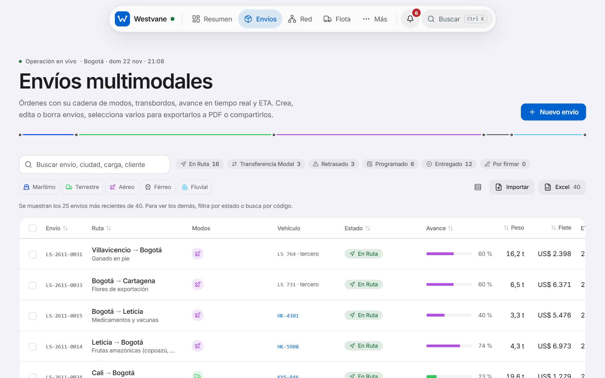
La ruta en grande, los costos, la cadena de modos con lo recorrido, el mapa, la bitácora de notas e incidencias, la prueba de entrega con firma en pantalla, los documentos adjuntos, la remesa y el PDF, y el enlace de seguimiento para el cliente.
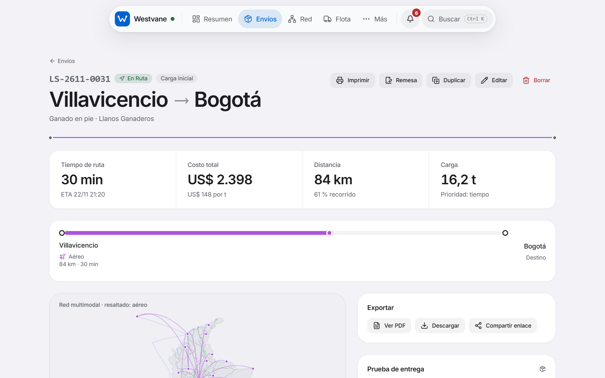
Origen, destino, carga, peso, fecha y prioridad; la vista previa calcula la ruta antes de guardar y la flota se asigna sola a cada tramo (o se usa un transportista tercero si no hay vehículo propio libre). Si sales a medias, el borrador se recupera.
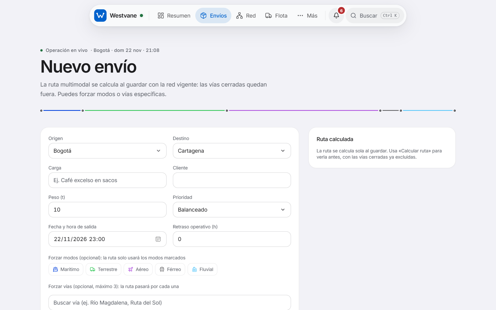
Vehículos con su estado, mantenimiento, SOAT y técnico-mecánica, fallas y conductores. Un vehículo con una falla que impide operar se inhabilita y sus envíos pasan a otro. Carga y exportación en Excel.
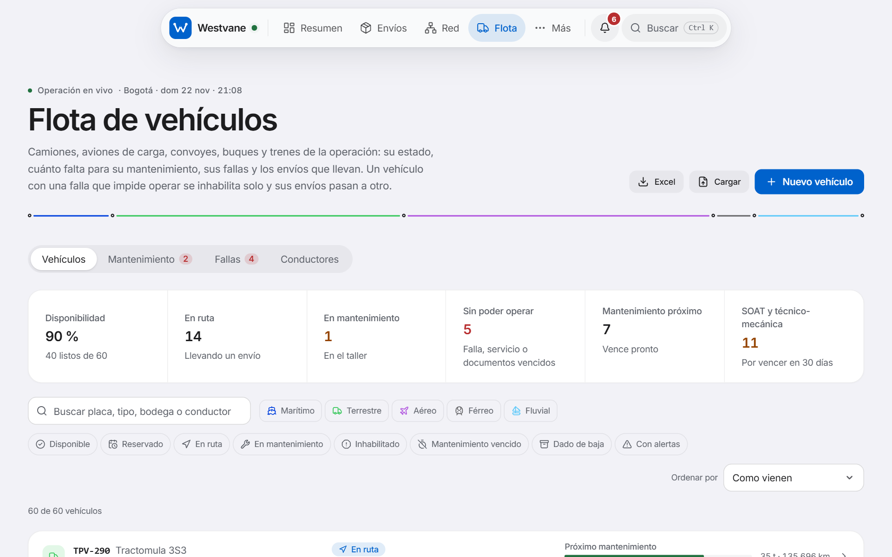
Documentos, próximo servicio, mantenimientos con su orden de trabajo en PDF, fallas, viajes y la hoja de vida completa en PDF.
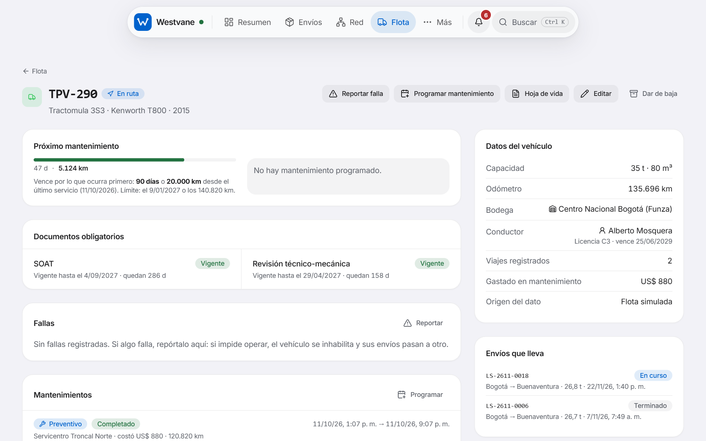
«Hoy» reúne lo que sale, lo que llega y lo que falta firmar en las próximas 24 horas, con el cumplimiento de entregas a tiempo por modo. «Bodegas» muestra ocupación, inventario bajo el mínimo y transferencias.
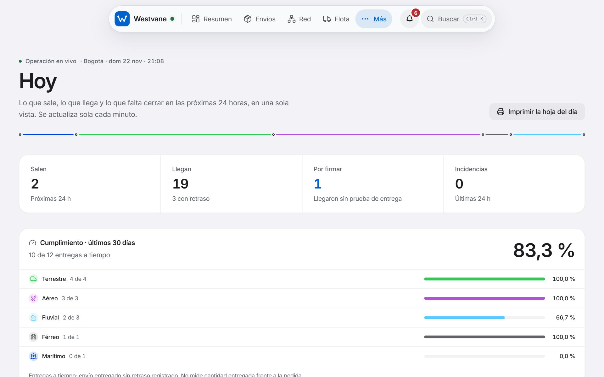
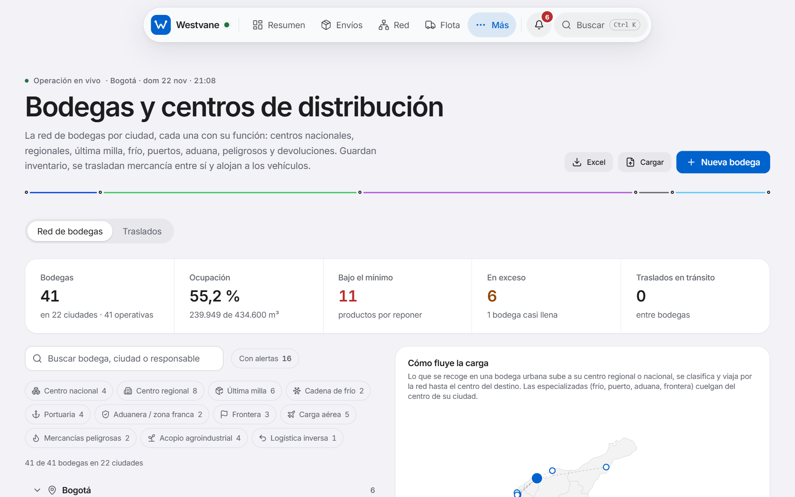
Ctrl K busca envíos, vehículos, bodegas y clientes en toda la operación (y ? muestra los atajos). En Configuración: apariencia clara u oscura, moneda (USD o COP), avisos por correo, mis sesiones y cambiar contraseña. En el celular la navegación pasa a una barra inferior.
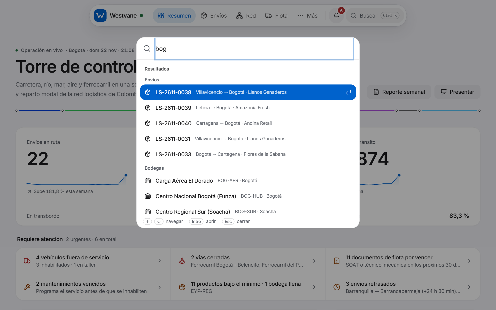
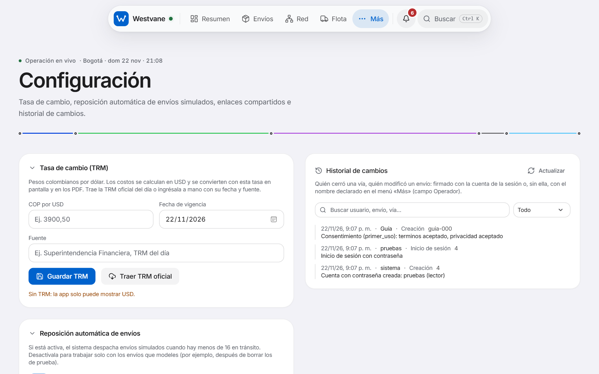
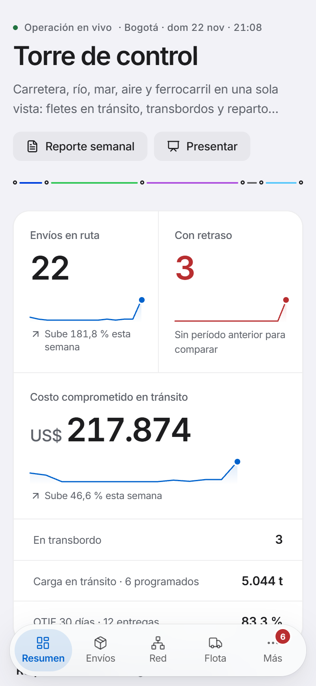
| Carpeta | Contenido |
|---|---|
frontend/ | Aplicación web: Next.js 16, React 19, Tailwind 4, deck.gl y MapLibre (mapa 3D solo de Colombia). Pruebas de navegador en frontend/e2e/ (Playwright, con accesibilidad axe). |
backend/ | API: FastAPI + SQLite. Motor de rutas multimodales, flota, bodegas, bitácora, PDF, seguimiento público, autenticación. Pruebas en backend/tests/ (pytest, más de 580). |
deploy/ | Producción: Caddy (HTTPS), respaldos, verificación del despliegue, prueba de carga y ensayo de restauración. |
docs/ | BITACORA.md: historia completa del proyecto y sus decisiones (más de 75 secciones). DESPLIEGUE_CONTABO.md, mediciones de rendimiento y esta guía. |
DESIGN.md, PRODUCT.md, AGENTS.md | Sistema de diseño (colores validados para daltonismo, movimiento, tipografía), producto y reglas del proyecto. |
Requisitos: Docker Desktop (Windows, Mac o Linux) con Docker Compose v2. No hace falta instalar Python ni Node.
docker-compose.yml).Copy-Item .env.example .env
docker compose up -d --build
docker compose ps
docker exec -it westvane-api python -m app.crear_acceso --usuario profesor --nombre "Profesor" --rol admin --generar
profesor y la contraseña del paso anterior.backend/data/. La documentación interactiva de la API está en http://localhost:8000/docs.Para detener: docker compose down. Para empezar de cero con datos nuevos: detén, borra backend/data/logistics.db y vuelve a levantar.
Requisitos: Python 3.11 o superior y Node.js 22 o superior. Dos ventanas de PowerShell.
cd backend python -m venv .venv .\.venv\Scripts\Activate.ps1 pip install -r requirements-dev.txt python -m app.crear_acceso --usuario profesor --nombre "Profesor" --rol admin --generar uvicorn app.main:app --port 8000
Si PowerShell no deja activar el entorno: Set-ExecutionPolicy -Scope Process Bypass y repite la activación.
cd frontend npm install npm run build $env:API_INTERNAL_URL = "http://localhost:8000" npm run start
Abre http://localhost:3000 e ingresa con profesor y la contraseña generada. Para desarrollo con recarga en vivo, usa npm run dev en lugar de build + start.
cd backend .\.venv\Scripts\python.exe -m pytest -q # API: más de 580 pruebas cd ..\frontend npx tsc --noEmit; npx eslint src e2e; npm run build $env:TZ = "America/Bogota" npx playwright install chromium # solo la primera vez npx playwright test # navegador: más de 100 pruebas, incluida accesibilidad
Las pruebas de navegador levantan su propia API y su propia base temporal (nunca tocan backend/data). Tardan unos 10 minutos.
/): la red real se enciende modo por modo; prueba «Calcular una ruta» en vivo./panel): cifras en vivo con tendencia, «Requiere atención» y la red./red): mapa 3D solo de Colombia; «Ahora en la red» y el simulador: elige origen y destino, prioriza tiempo, costo o equilibrio, y mira la ruta multimodal con transbordos, costo y CO₂e.backend/app/engine/multimodal.py): grafo de la red real con costos por modo, transbordos, cierres de vía que se propagan y priorización por tiempo, costo o equilibrio.docs/mediciones/, bitácora 65, 75 y 77): lecturas memorizadas mientras la base no cambia, un solo motor de sondeo que se pausa con la pestaña oculta, carga diferida, mapa quieto en reposo (0 cuadros) y recortado a Colombia.DESIGN.md): paleta de modos validada para daltonismo por cálculo; animaciones solo con transform y opacidad.deploy/verificar.sh con más de 30 comprobaciones tras cada despliegue.La app está desplegada en https://westvane.duckdns.org (servidor Contabo, HTTPS con Caddy). La cuenta de revisión está al inicio de esta guía.